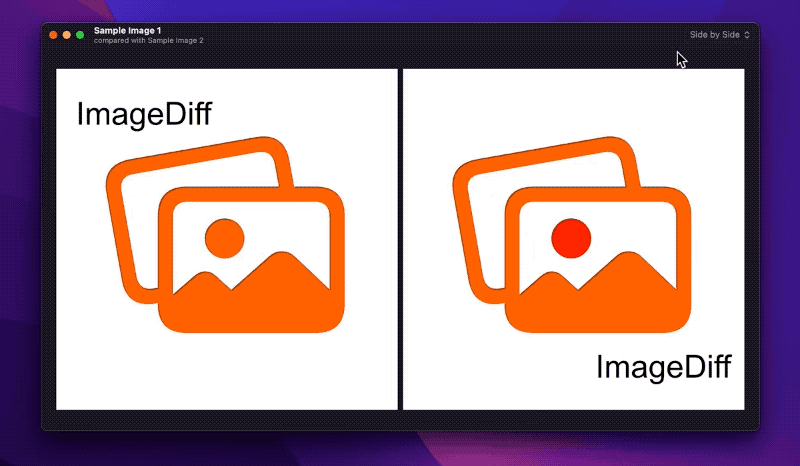

システム要件
macOS 12以上
使用方法
画像を開く
メニューバーの「ファイル」から「画像1を開く」および「画像2を開く」を選択し、比較したい画像を開く。または、ウィンドウ内を右クリック（Control + クリック）してコンテキストメニューから開く。あるいは、Finder等から画像ファイルや画像データをアプリのウィンドウへドラッグ＆ドロップして開くことも可能。ドラッグ＆ドロップする場合、ウィンドウの左半分にドロップすると画像1として、右半分にドロップすると画像2として読み込まれる。複数の画像をドロップした場合は、最初のふたつの画像が読み込まれる。
比較方法の変更
メニューバーの「表示」を開き、
- サイドバイサイド
- ふたつの画像を縦横に並べる
- クリッカー
- クリックのたびにふたつの画像の切り替えて表示する
- ディゾルブ
- ふたつの画像を重ねて配置し、スライダー操作により上側の画像の透明度を変化させながら表示する
- ワイプ
- ふたつの画像を重ねて配置し、ドラッグによって上側の画像の表示領域を変化させながら表示する
- 差分画像
- ふたつの画像の差分画像を表示する
の5種から選択できます。ウィンドウのツールバーや、右クリック（Control + クリック）のコンテキストメニューからも変更可能です。
背景の変更
ウィンドウの背景の描画方法を以下の4種から選択できます。
ヴァージョン履歴
- ver. 2.0: 2022年7月5日
- SwiftUIを用いて再構築
- パフォーマンスの改善
- マルチウィンドウとタブに対応
- サイドバイサイド表示での縦並びを実装
- 背景の変更機能を実装
- トラックパッドジェスチャによる任意の拡大縮小表示を実装
- ver. 1.0.4: 2019年8月8日
- Wipe機能に関する問題を修正
- ver. 1.0.3: 2012-1-31
- App Sandbox を有効化
- ver. 1.0.2: 2011-8-31
- 最初のリリース